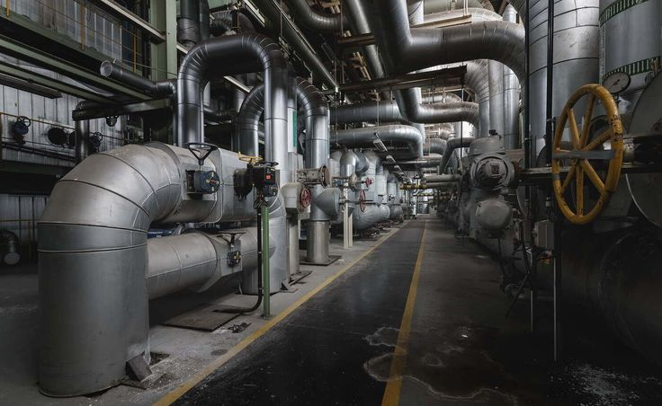
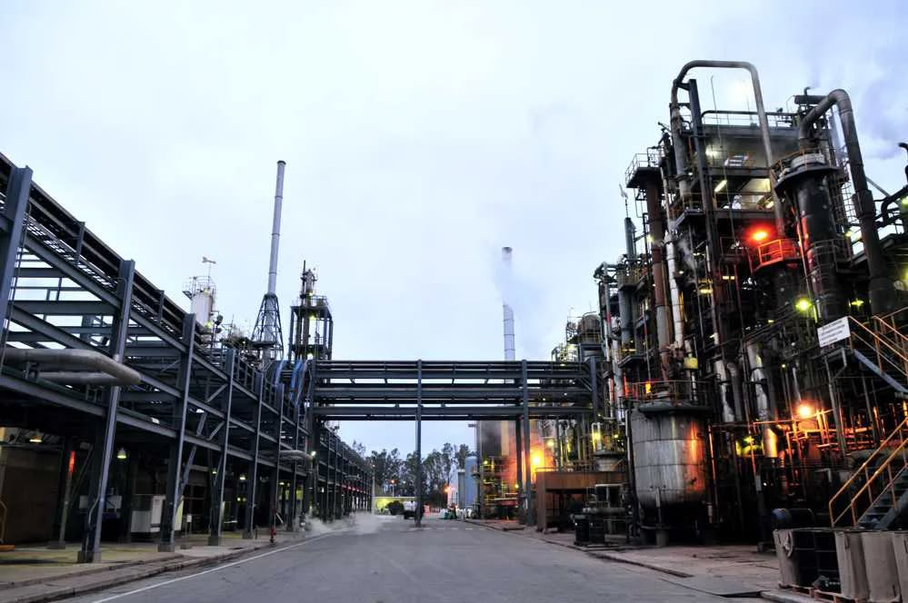

CAPACIDAD INSTALADA
+250 proyectos ejecutados
Paradas de planta, tanques criogénicos, hornos rotatorios y ductos de vapor a nivel nacional.



LÍDER EN AISLAMIENTO TÉRMICO INDUSTRIAL | PERÚ
Más de 10 años de experiencia técnica garantizando eficiencia energética certificada y protección de activos críticos para minería, refinería y manufactura pesada.
Paradas de planta, tanques criogénicos, hornos rotatorios y ductos de vapor a nivel nacional.
Reducción comprobada de pérdidas caloríficas con auditoría termográfica calibrada.
Supervisión continua según OSHA 1910, ASME Sección VIII y CINA/ASTM C533.
// PILARES OPERATIVOS
Protocolos de mitigación térmica para evitar quemaduras por contacto superficial accidental (T ≤ 60 °C según OSHA). Cero incidentes LTI en más de 200,000 HH de montaje en caliente.
Auditorías térmicas termográficas con cálculo de caída de entalpía y simulación 3E Plus. Reducción del consumo de combustible en calderas e hidrocarburos pesados.
PILAR 03 / ESPECIFICACIÓN TÉCNICA
Densidad hasta 160 kg/m³. Incombustible, ideal para generadores y chimeneas. T. máx: 750 °C
Alta resistencia a la compresión en tuberías con tráfico constante. T. máx: 1000 °C
Mínimo espesor con conductividad ultra-baja para espacios confinados.
Aluminio corrugado o acero inoxidable con barrera de vapor. Hermético IP66.
// RIESGO EN PLANTA
Nuestros equipos operan en altura y bajo condiciones climáticas extremas, desde plantas a nivel del mar hasta faenas mineras sobre los 4,500 msnm.

Realizamos levantamiento dimensional in situ y presupuesto detallado sin costo en menos de 24 horas hábiles.